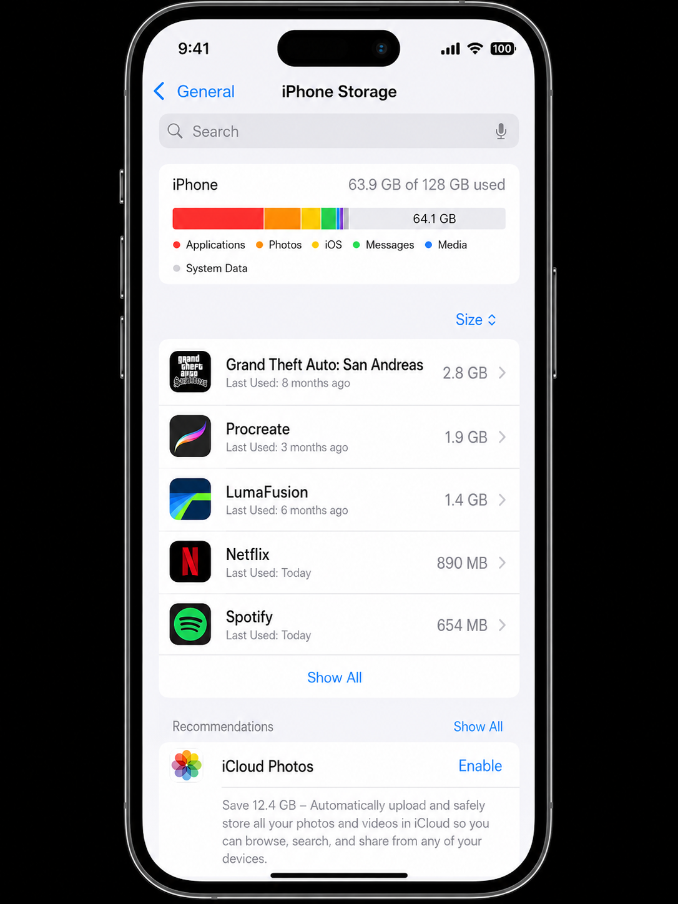
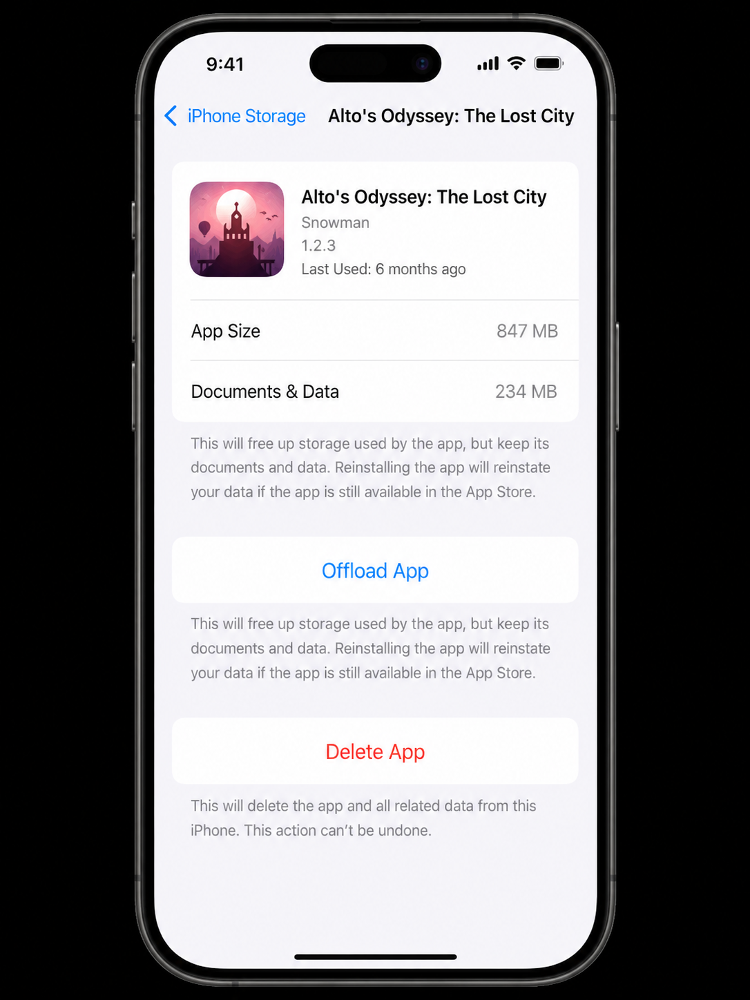

Why unused apps cost you more than just storage
Every app on your iPhone costs storage in two ways. First, the app itself — the binary that runs when you open it. A typical game is 500 MB to 2 GB. A creative app like Procreate or LumaFusion can be 1–2 GB. Second, the app's Documents & Data — cached content, downloaded files, saved settings, and offline data. This second number can be larger than the app itself, especially for long-installed apps.
Beyond storage, unused apps also contribute to background activity — location checks, notification requests, and periodic data refreshes — that can affect battery life. Clearing apps you don't use is always worth doing.
Offload vs Delete — the critical difference
Apple gives you two ways to remove an app from your iPhone, and choosing the wrong one can cost you data you didn't know you were keeping.
✓ Offload App
- Removes the app binary (frees storage)
- Keeps all Documents & Data
- Icon stays on Home Screen (greyed out)
- Tap icon to re-download instantly
- Best for: apps you might use again, apps with unsaved local data
✗ Delete App
- Removes the app binary AND all its data
- Icon disappears from Home Screen
- Cannot be undone — data is gone
- Best for: apps you're certain you'll never use again
Some apps store important data locally that isn't synced to a cloud service — older games without cloud saves, certain note-taking apps, local fitness logs, and offline maps. Before deleting, check whether the app syncs to iCloud, Google, or its own cloud. If it doesn't: Offload, not Delete.

Settings → General → iPhone Storage lists your apps sorted by size — largest first. This is your hit list. Work from the top down.
Method 1 — Find and remove apps by size
The most efficient way to free storage is to start with the biggest apps. iPhone Storage shows your entire app list sorted by size, making it easy to target the highest-impact items first.
-
1
Go to Settings → General → iPhone Storage
Wait 10–15 seconds for the full list to load. Apps are sorted with the largest at the top.
-
2
Tap the largest app you haven't used recently
You'll see two numbers: App Size (the binary) and Documents & Data (cached content and local files). Note when you last used the app — iOS shows "Last Used" for each app.
-
3
Tap "Offload App" or "Delete App"
Use the decision guide above: Offload if you might use it again or aren't sure about its data. Delete if you're certain you don't need it or its data.
-
4
Repeat for the next large app
Work through the top 10 apps. Even clearing 5 apps can recover 5–15 GB on a typical iPhone.
Method 2 — Enable automatic offloading
Once you've done the manual clean-up, turn on automatic offloading so your phone maintains itself. iOS will silently offload apps you haven't opened in a while whenever storage gets low — no manual intervention required.
-
1
Go to Settings → App Store
Scroll down to the Automatic Downloads section.
-
2
Turn on "Offload Unused Apps"
iOS now monitors app usage in the background and offloads anything you haven't opened for a while. The apps remain available — just greyed out on your Home Screen until you re-tap them.
Unlike Delete, auto-offload never removes your data — only the app binary. You can re-enable any offloaded app in seconds by tapping its icon. There's no meaningful downside to leaving this setting on permanently.

Every app's detail screen in iPhone Storage shows the exact split between the app itself and its cached data, plus the last time you used it — everything you need to make the right call.
Method 3 — Use App Library to find forgotten apps
Since iOS 14, every app on your phone lives in the App Library — even ones buried in folders or removed from your Home Screen pages. This is the best place to discover apps you completely forgot you had, which are prime candidates for deletion.
Access App Library by swiping right past your last Home Screen page. Browse the auto-generated categories (Social, Entertainment, Utilities, etc.) or use the search bar at the top. Any app you haven't opened in months that you don't recognise is almost certainly safe to remove.
Apps to always Offload — never Delete
Some categories of apps carry important local data. Always Offload these rather than Delete unless you've verified their data is backed up:
- Banking and financial apps: May store transaction history or authentication tokens locally.
- Health and fitness trackers: Apps that record workout history, weight, sleep, or nutrition data. Check whether they sync to Apple Health or their own cloud before deleting.
- Games with local save files: Many mobile games save progress locally with no cloud backup. Check the game's settings for "Sign in with Game Center" or cloud save options.
- Note-taking and productivity apps: Apps like GoodNotes, Notability, and local-first note apps may store notebooks only on device. Export or back up before deleting.
- Authenticator apps: 2FA apps (Google Authenticator, Authy) — deleting without backing up your codes can lock you out of accounts permanently.
Apps that are almost always safe to delete outright
- Games you've completed or stopped playing (especially if they support Game Center saves)
- Social media apps you no longer use (all data lives on the platform's servers)
- Travel apps from trips you've already taken (airline apps, hotel apps, city guides)
- Streaming apps (Netflix, Disney+, Spotify — all data is in the cloud)
- Apps from old jobs, schools, or services you no longer use
- Duplicate utility apps (three torch apps, two QR code scanners)
Full comparison: Offload vs Delete
| Factor | Offload App | Delete App |
|---|---|---|
| Frees the app binary storage | ✓ Yes | ✓ Yes |
| Frees Documents & Data storage | ✗ No | ✓ Yes |
| Keeps app data safe | ✓ Yes | ✗ No |
| Icon stays on Home Screen | ✓ Yes (greyed) | ✗ Removed |
| Can reinstall with data intact | ✓ Yes | ✗ No |
| Reversible | ✓ Fully | ✗ Data gone |